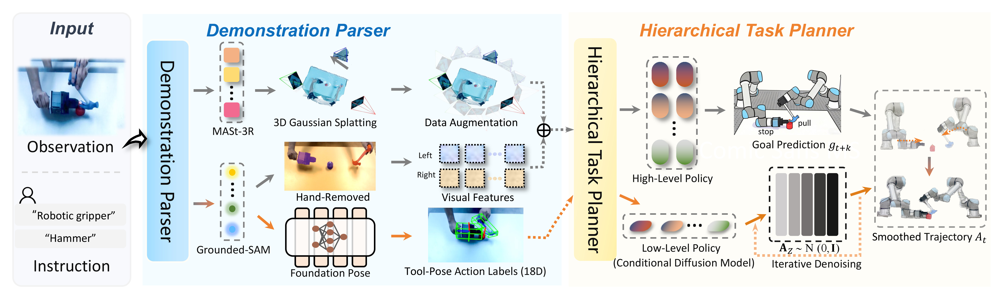

Humans excel at bimanual manipulation, while robots struggle with bimanual tasks due to the high cost of data collection. To address this, we propose the Tool-Action Comprehension (TAC) framework, a cross-morphology imitation learning method that directly acquires bimanual skills from human demonstration videos. TAC leverages MASt-3R and Gaussian splatting for 3D scene reconstruction, integrates FoundationPose for 6D tool pose estimation, and employs Grounded-SAM to eliminate hand interference, generating tool-centric strategy representations without teleoperation devices or manual annotations. Inspired by human hierarchical planning, TAC decomposes tasks into high-level target prediction and low-level trajectory generation, unified through a conditional diffusion model to produce smooth and coordinated motions. Experiments demonstrate that TAC achieves a superior success rate of 81.5%, outperforming SOTA methods by a 62.2% margin, and enables scalable learning with novices collecting data 14.9% faster than experts.
TAC takes visual observations, task instructions, and proprioception as inputs. The demonstration parser uses MASt-3R and Gaussian splatting for 3D reconstruction, FoundationPose for pose estimation, and Grounded-SAM for morphological decoupling, automatically converting human videos into structured training data. The final training samples include hand-removed tool-centric observations and the corresponding 18D tool-pose action labels. During deployment, the hierarchical planner first predicts short-term coordinated goals, and the low-level diffusion policy then generates specific, coordinated bimanual trajectories to execute the task.

We evaluate the TAC framework through five challenging bimanual collaborative tasks, which are: play football, stow blanket, flip fried egg, pull out nail, and transport block.
Play Football
Stow Blanket
Flip Fried Egg
Pull Out Nail
Transport block
We compare TAC with three representative SOTA baselines. Diffusion Policy (DP), 3D Diffusion Policy (DP3) and Hierarchical Diffusion Policy (HDP).
We introduce three types of perturbation tests: (1) camera disturbance, where the camera is randomly shaken to simulate visual disturbances; (2) human interference, where the operator physically perturbs the manipulated object during execution; and (3) unseen objects, where novel items not used in training are introduced during evaluation.
To evaluate the data collection paradigm, we compare natural human demonstration videos used by TAC with GELLO teleoperation, SpaceMouse control, and Xbox-based data collection. These methods are evaluated under the same robot rollout protocol, analyzing collection time, effective demonstration rate, and downstream task success.